Présentation du projet
ZABBIX — Installation Serveur
Téléchargement du dépôt officiel Zabbix, installation via dpkg, mise à jour des sources puis installation de l'ensemble des composants serveur : zabbix-server-mysql, zabbix-frontend-php, zabbix-apache-conf, zabbix-sql-scripts et zabbix-agent.
# 1. Télécharger le paquet dépôt Zabbix sudo wget https://repo.zabbix.com/zabbix/6.3/ubuntu/pool/main/z/zabbix-release/zabbix-release_6.3-3%2Bubuntu22.04_all.deb # 2. Installer le paquet dépôt sudo dpkg -i zabbix-release_6.3-3+ubuntu22.04_all.deb # 3. Mettre à jour les sources sudo apt update # 4. Installer les composants Zabbix sudo apt install zabbix-server-mysql zabbix-frontend-php zabbix-apache-conf zabbix-sql-scripts zabbix-agent
Installation du serveur MySQL, création de la base de données zabbix avec encodage UTF8MB4, création de l'utilisateur dédié et importation du schéma initial. Attention : l'importation du schéma nécessite 1 à 3 minutes après saisie du mot de passe.
# 5. Installer MySQL sudo apt-get install mysql-server sudo systemctl start mysql # 7. Créer la base de données Zabbix sudo mysql create database zabbix character set utf8mb4 collate utf8mb4_bin; create user zabbix@localhost identified by 'password'; grant all privileges on zabbix.* to zabbix@localhost; set global log_bin_trust_function_creators = 1; quit; # 8. Importer le schéma initial (1-3 min) sudo zcat /usr/share/zabbix-sql-scripts/mysql/server.sql.gz | mysql --default-character-set=utf8mb4 -uzabbix -p zabbix # 9. Désactiver l'option post-import sudo mysql set global log_bin_trust_function_creators = 0; quit;
Édition du fichier de configuration pour décommenter DBHost=localhost et renseigner DBPassword avec le mot de passe créé précédemment.
sudo nano /etc/zabbix/zabbix_server.conf # Décommenter et configurer : DBHost=localhost DBPassword=password
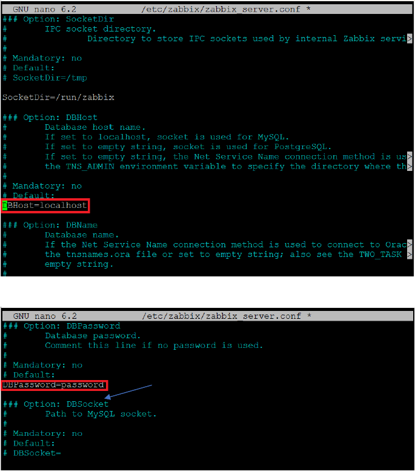
# 11. Redémarrer les services systemctl restart zabbix-server zabbix-agent apache2 # 12. Activer au démarrage automatique systemctl enable zabbix-server zabbix-agent apache2
Accès à l'interface web Zabbix
Connecter la base de données avec :
User : zabbix
Password : password
Nom d'utilisateur : Admin
Mot de passe : zabbix
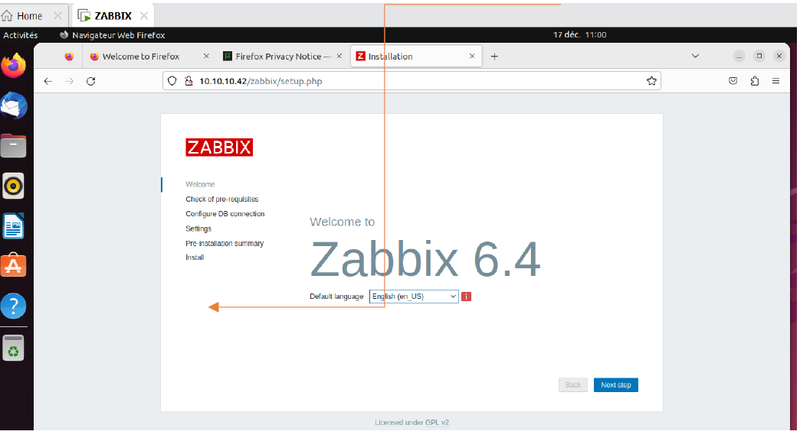
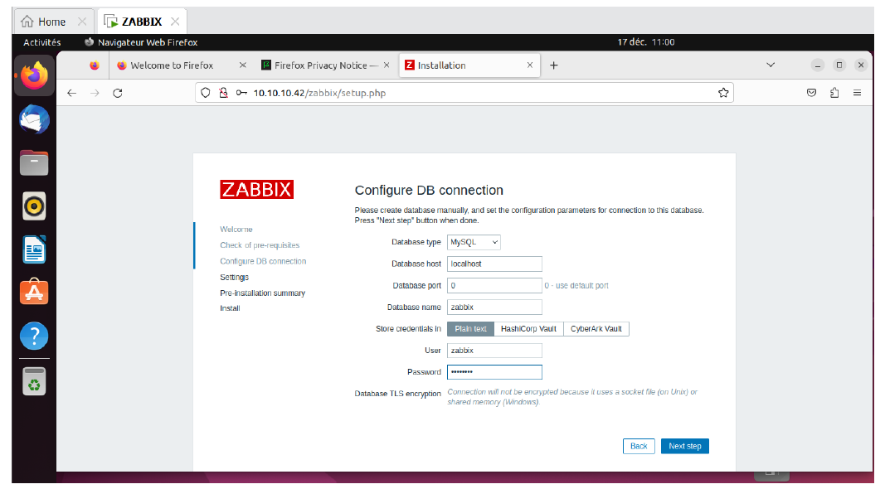
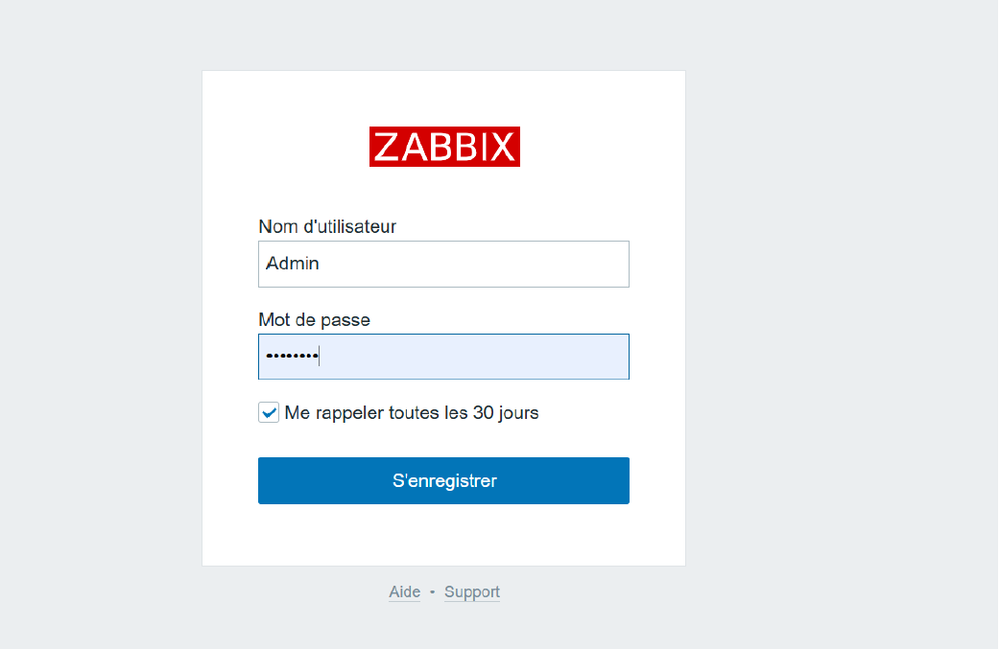
ZABBIX — Agent & Hôtes
Le Zabbix Agent s'exécute sur les systèmes à surveiller et collecte des données système qu'il transmet au serveur Zabbix. Le serveur et l'agent doivent être sur le même réseau ou accessibles l'un à l'autre. Le port d'écoute par défaut de l'agent est 10050/TCP.
Télécharger la version compatible Windows depuis le site officiel Zabbix : https://www.zabbix.com/fr/download_agents — Sélectionner OS : Windows, Architecture : amd64, Version Zabbix : 6.4, Format : MSI.
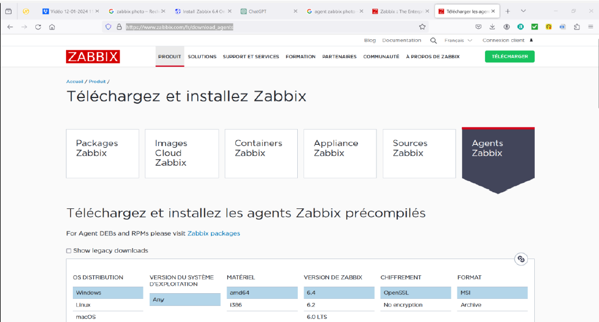
Exécuter l'installateur MSI. Renseigner le nom d'hôte du client et l'adresse IP du serveur Zabbix dans l'assistant. L'agent écoute sur le port 10050.
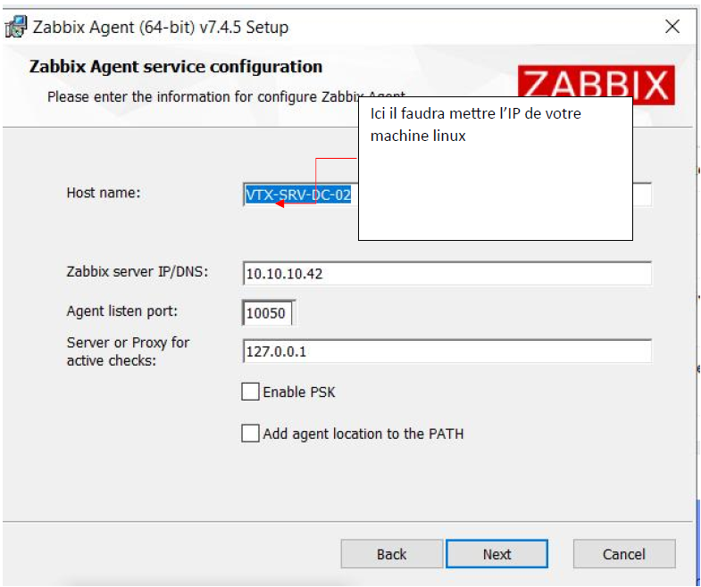
Dans l'interface Zabbix Server, créer un nouvel hôte en renseignant le nom, l'adresse IP du client (machine Linux : 10.10.10.11), le DNS, les modèles (Linux by Zabbix agent) et le groupe d'hôtes (Virtual machines).
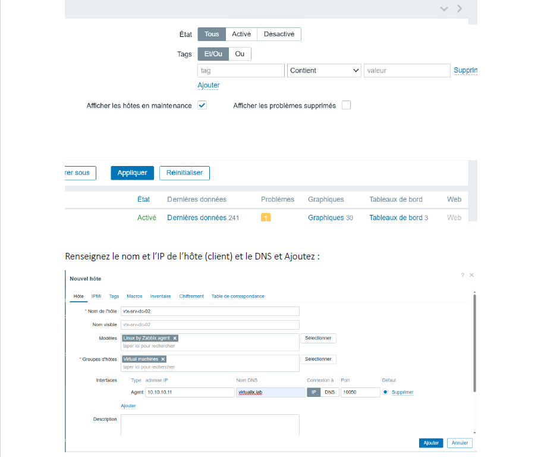
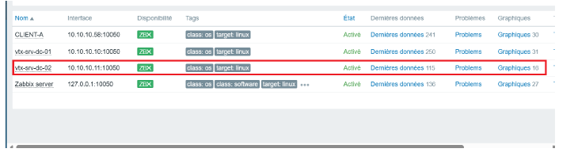
Actif ✔
Actif ✔
Actif ✔
Actif ✔
WAZUH — Installation All-in-One
Avant l'installation, vérifier l'identité de la machine, l'adressage IP et la synchronisation horaire. Ces éléments conditionnent la stabilité des certificats, l'horodatage des logs et la résolution DNS.
hostnamectl # Static hostname: wazuh — OS: Debian GNU/Linux 13 (trixie) # Virtualization: vmware — Architecture: x86-64 ip a # ens32: inet 10.10.10.42/24 timedatectl # Local time: mer. 2025-12-17 11:45:07 CET # System clock synchronized: yes — NTP service: active
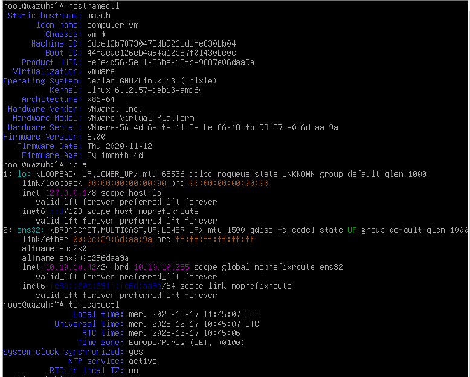
Ports à ouvrir
| Port / Proto | Usage | Obligatoire |
|---|---|---|
| 1514/TCP | Réception des événements agent | Oui |
| 1515/TCP | Enrôlement des agents | Oui |
| 443/TCP | Accès au dashboard web | Oui |
| 55000/TCP | API du serveur (administration distante) | Recommandé |
| 9200/TCP | Indexer OpenSearch (interne) | Interne |
L'assistant wazuh-install.sh déploie automatiquement le serveur Wazuh (Manager), l'indexeur (OpenSearch) et le dashboard en une seule commande. À la fin, un résumé affiche l'URL d'accès et les identifiants générés.
cd /root curl -sO https://packages.wazuh.com/4.14/wazuh-install.sh && sudo bash ./wazuh-install.sh -a # Déroulement automatique : # → Wazuh indexer installation finished # → Wazuh manager installation finished # → Filebeat installation finished # → Wazuh dashboard installation finished # # Résumé final : # User: admin # Password: IULGaDM?.16VvxsGUzDN235e9xS3DEtA # https://<wazuh-dashboard-ip>:443
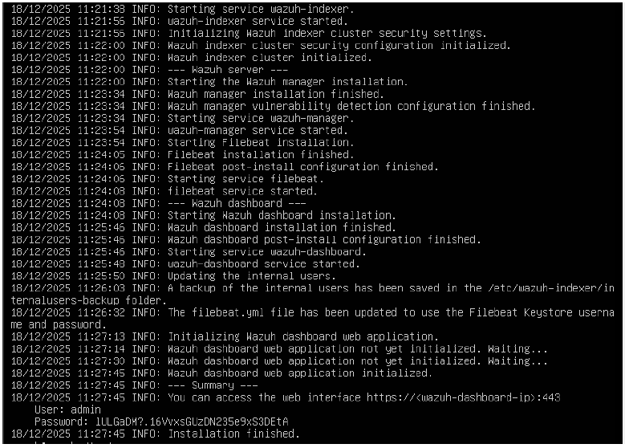
L'installateur génère une archive wazuh-install-files.tar contenant les certificats et mots de passe. Extraire le fichier de mots de passe pour le conserver en sécurité, puis neutraliser le dépôt Wazuh pour éviter une mise à jour non maîtrisée.
ls -lh sudo tar -O -xvf wazuh-install-files.tar wazuh-install-files/wazuh-passwords.txt # Post-installation — Neutraliser le dépôt Wazuh ls -l /etc/apt/sources.list.d/ sudo mv /etc/apt/sources.list.d/wazuh.list /etc/apt/sources.list.d/wazuh.list.disabled 2>/dev/null || true sudo apt update
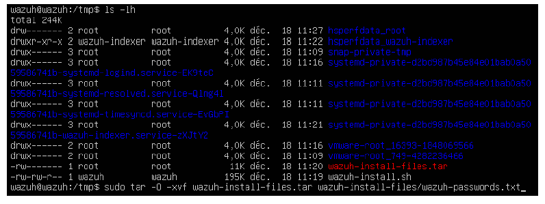
WAZUH — Dashboard & Vérifications
Depuis un poste d'administration, accéder à https://<IP_DU_SERVEUR_WAZUH>. Au premier accès, accepter l'avertissement certificat auto-signé. Se connecter avec admin et le mot de passe du Summary.
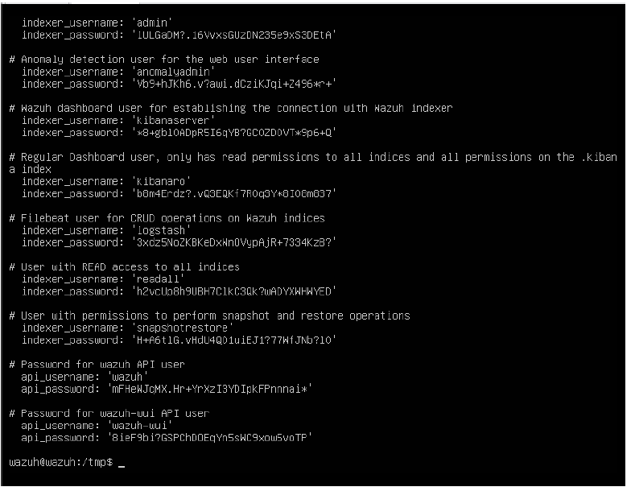
# Vérifier les services écoutant sur les ports Wazuh ss -lntup | egrep '(:1514|:1515|:443|:9200|:55000)\b' # Résultat attendu : # tcp LISTEN 0.0.0.0:443 → Dashboard HTTPS # tcp LISTEN 0.0.0.0:1514 → Réception événements agents # tcp LISTEN 0.0.0.0:1515 → Enrôlement agents # tcp LISTEN 0.0.0.0:55000 → API Wazuh # tcp LISTEN [::ffff:127.0.0.1]:9200 → Indexer OpenSearch
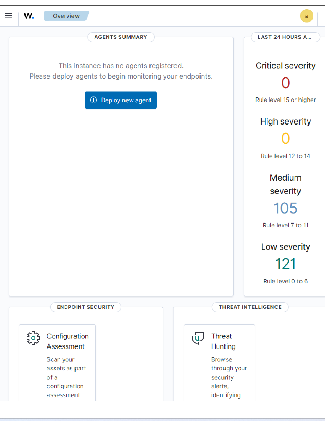
curl -k -u admin https://localhost:9200 # Réponse JSON attendue : # { # "name": "node-1", # "cluster_name": "wazuh-cluster", # "version": { "number": "7.10.2" }, # "tagline": "The OpenSearch Project" # }
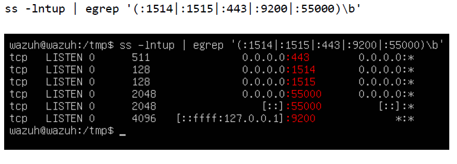
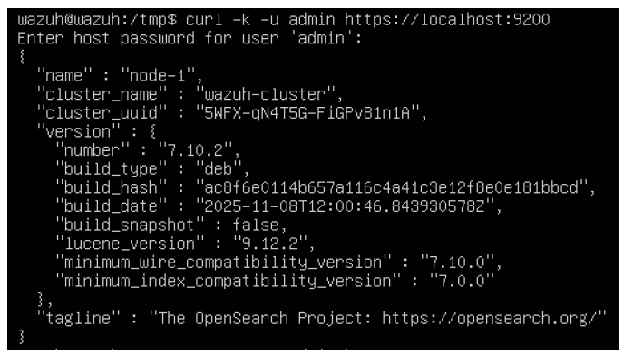
WAZUH — Déploiement Agents
Installer l'agent en déclarant le manager via la variable WAZUH_MANAGER, puis activer et démarrer le service.
export WAZUH_MANAGER="x.x.x.x" sudo -E apt-get install wazuh-agent sudo systemctl enable --now wazuh-agent systemctl status wazuh-agent --no-pager
Télécharger le MSI Wazuh Agent et lancer une installation silencieuse en PowerShell en passant l'adresse du manager.
# PowerShell — Installation silencieuse msiexec.exe /i .\wazuh-agent-*.msi /qn WAZUH_MANAGER="x.x.x.x" sc.exe start WazuhSvc
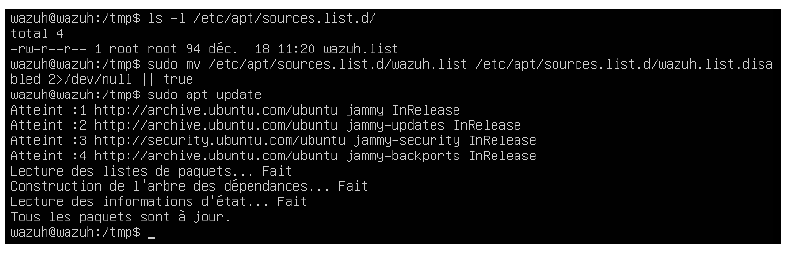
Synthèse des déploiements
- ✔ Serveur Zabbix 6.4 opérationnel sur Ubuntu 22.04
- ✔ Base MySQL configurée et schéma importé
- ✔ Interface web accessible sur /zabbix
- ✔ Agents Windows et Linux connectés
- ✔ Hôte vtx-srv-dc-02 monitoré avec succès
- ✔ Wazuh 4.14.1 déployé sur Debian 13
- ✔ Indexer OpenSearch 7.10.2 actif sur port 9200
- ✔ Dashboard accessible sur HTTPS:443
- ✔ Ports 1514/1515/55000 en écoute
- ✔ Agents Linux et Windows enrôlés et actifs
Wazuh assure la surveillance sécurité : détection d'intrusion, analyse de logs, conformité et corrélation d'événements. Il répond à la question "mon infrastructure est-elle compromise ou attaquée ?"
Ensemble, ils couvrent les deux dimensions essentielles de la gestion d'infrastructure : la disponibilité et la sécurité.